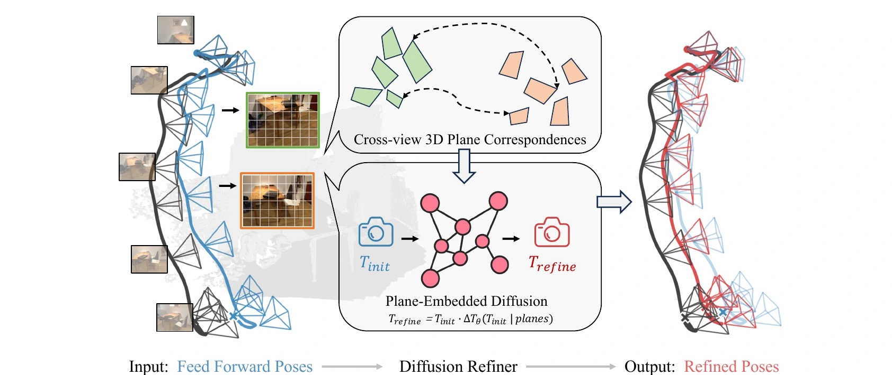
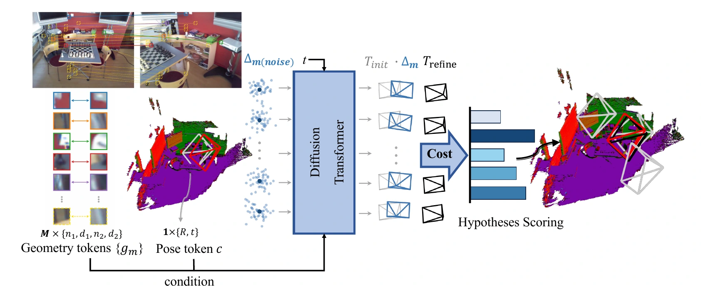
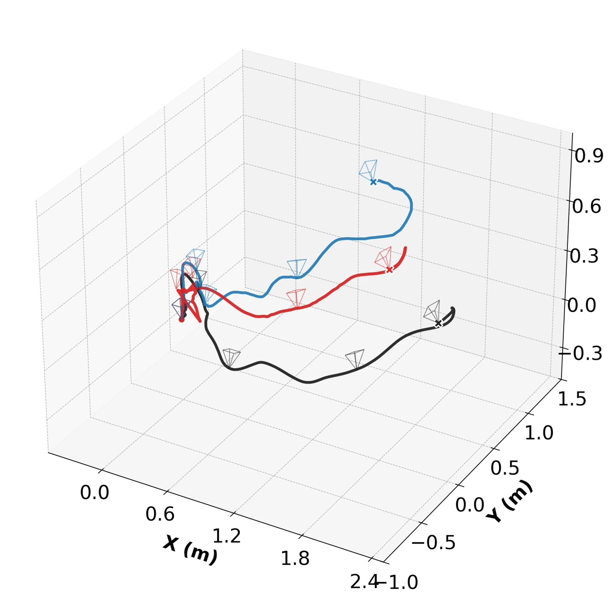
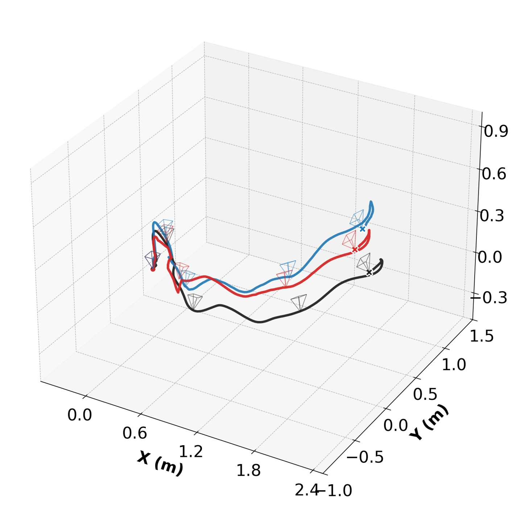
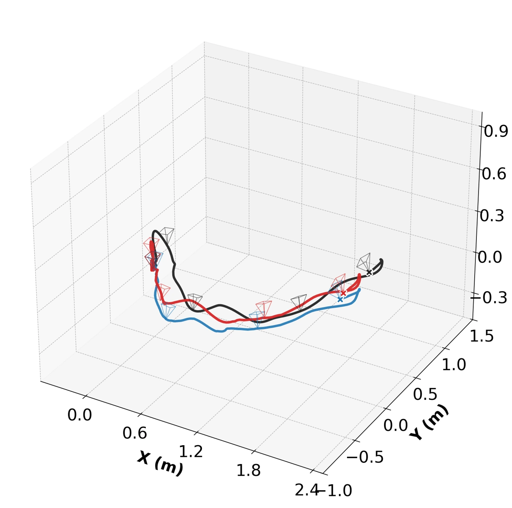

01
Match local planes
Predict planar primitives in each camera’s local frame. Convert pixel matches into patch-level correspondences and compute plane-warping residuals.
GEOMETRIC REFINEMENT FOR CAMERA POSES
1 HKUST, Hong Kong, China2 Robbyant, Ant Group, China
‡ Corresponding authors
Refine an existing camera pose with matched planes in one flow-matching step.
Train on image pairs; transfer the same refiner to long sequences.

PosePlaner conditions a diffusion model on matched planes and an initial camera pose to learn pose corrections. A correct relative pose should align corresponding planes across views. Trained with flow matching, the refiner learns a pose correction in a single denoising step.
Two estimates of the same plane disagree.
Illustrative GT, not a model input. One of multiple matched plane pairs shown.
| Dataset | Before refinement | After refinement |
|---|---|---|
| ScanNet1500 | 0.200 | 0.084 |
| 7Scenes | 0.156 | 0.076 |
| Dataset | Before refinement | After refinement |
|---|---|---|
| ScanNet1500 | 0.072 | 0.064 |
| 7Scenes | 0.057 | 0.053 |
Median residuals from the paper’s LoFTR experiments; lower is better. Left: normal difference. Right: scene-normalized plane offset. These are measured results, separate from the schematic above.
METHOD
A flow-matching Transformer predicts candidate pose corrections in one Euler step. A learned score head fuses the candidates using planar consistency.

Predict planar primitives in each camera’s local frame. Convert pixel matches into patch-level correspondences and compute plane-warping residuals.
A flow-matching Transformer produces multiple pose hypotheses in one Euler step. A learned score head combines them using geometric consistency.
With the refined rotation fixed, recover translation using a geometric optimization initialized from the upstream estimate.
Refine pairwise rotations in the trajectory tail. Rotation averaging and global positioning use a shared reconstruction backend.
A geometric correction for two-view poses and streaming trajectories.
Seven upstream models on ScanNet1500 and zero-shot 7Scenes. Rotation AUC@10° (%).
Swipe to see all upstream methods →
| Upstream | Initialization | + PosePlaner |
|---|---|---|
| SuperGlue | 62.4 | 68.9 |
| LoFTR | 25.0 | 52.9 |
| RoMA | 81.2 | 80.1 |
| MASt3R | 82.4 | 81.7 |
| PoseDiffusion | 9.0 | 38.8 |
| RayDiffusion | 33.4 | 50.5 |
| DiffusionSfM | 64.3 | 68.6 |
Swipe to see all upstream methods →
| Upstream | Initialization | + PosePlaner |
|---|---|---|
| SuperGlue | 65.9 | 69.7 |
| LoFTR | 34.2 | 56.8 |
| RoMA | 73.3 | 74.1 |
| MASt3R | 73.3 | 74.0 |
| PoseDiffusion | 12.2 | 44.6 |
| RayDiffusion | 32.7 | 51.4 |
| DiffusionSfM | 66.6 | 69.1 |
From two views to n views—without retraining. The same refiner, trained only on image pairs, refines pairwise poses within a long sequence; multi-view aggregation recovers the trajectory. Rotation AUC@5° (%) on the last 100 frames.
Swipe to see all upstream methods →
| Upstream | Initialization | + PosePlaner |
|---|---|---|
| CUT3R | 23.3 | 40.5 |
| TTT3R | 46.2 | 50.7 |
| WinT3R | 37.7 | 45.9 |
| Spann3R | 32.4 | 45.6 |
Swipe to see all upstream methods →
| Upstream | Initialization | + PosePlaner |
|---|---|---|
| CUT3R | 16.5 | 37.3 |
| TTT3R | 36.1 | 47.1 |
| WinT3R | 28.3 | 42.5 |
| Spann3R | 20.0 | 38.8 |
Swipe to see all upstream methods →
| Upstream | Initialization | + PosePlaner |
|---|---|---|
| CUT3R | 17.3 | 37.3 |
| TTT3R | 27.5 | 48.2 |
| WinT3R | 19.2 | 27.9 |
| Spann3R | 19.4 | 37.1 |
Swipe to see all upstream methods →
| Upstream | Initialization | + PosePlaner |
|---|---|---|
| CUT3R | 22.0 | 35.1 |
| TTT3R | 44.1 | 44.5 |
| WinT3R | 40.0 | 43.9 |
| Spann3R | 34.5 | 40.8 |
Swipe to see all upstream methods →
| Upstream | Initialization | + PosePlaner |
|---|---|---|
| CUT3R | 16.2 | 35.1 |
| TTT3R | 36.0 | 41.9 |
| WinT3R | 44.2 | 46.3 |
| Spann3R | 35.7 | 42.1 |
Swipe to see all upstream methods →
| Upstream | Initialization | + PosePlaner |
|---|---|---|
| CUT3R | 12.0 | 28.1 |
| TTT3R | 38.4 | 41.7 |
| WinT3R | 41.6 | 42.9 |
| Spann3R | 39.6 | 43.7 |
A ScanNet example: refined poses in red, initialization in blue, ground truth in black.



Zero-shot transfer, with no outdoor training. Both the plane predictor and pose refiner remain frozen on Oxford Spires and MatrixCity. Gains vary across settings, with some regressions, highlighting a limitation in outdoor generalization. Rotation AUC@5° (%).
Swipe to see all upstream methods →
| Upstream | Initialization | + PosePlaner |
|---|---|---|
| CUT3R | 59.1 | 65.8 |
| TTT3R | 73.6 | 72.3 |
Swipe to see all upstream methods →
| Upstream | Initialization | + PosePlaner |
|---|---|---|
| CUT3R | 35.5 | 50.4 |
| TTT3R | 59.7 | 62.9 |
Swipe to see all upstream methods →
| Upstream | Initialization | + PosePlaner |
|---|---|---|
| CUT3R | 34.0 | 53.3 |
| TTT3R | 37.2 | 51.3 |
Swipe to see all upstream methods →
| Upstream | Initialization | + PosePlaner |
|---|---|---|
| CUT3R | 13.2 | 16.4 |
| TTT3R | 18.1 | 20.6 |
Swipe to see all upstream methods →
| Upstream | Initialization | + PosePlaner |
|---|---|---|
| CUT3R | 12.4 | 15.1 |
| TTT3R | 10.5 | 14.4 |
Swipe to see all upstream methods →
| Upstream | Initialization | + PosePlaner |
|---|---|---|
| CUT3R | 9.9 | 15.5 |
| TTT3R | 12.7 | 17.2 |
Selected rotation metrics. Refinement gains vary with the initialization and setting; complete results are reported in the paper.
@misc{chen2026poseplaner,
title = {PosePlaner: Denoising Any Feed-Forward Pose Predictor from Pairwise Planar Geometry},
author = {Yihang Chen and Bin Tan and Yujun Shen and Yinghao Xu and Nan Xue},
year = {2026},
eprint = {2610.34845},
archivePrefix = {arXiv},
primaryClass = {cs.CV},
url = {https://arxiv.org/abs/2610.34845}
}